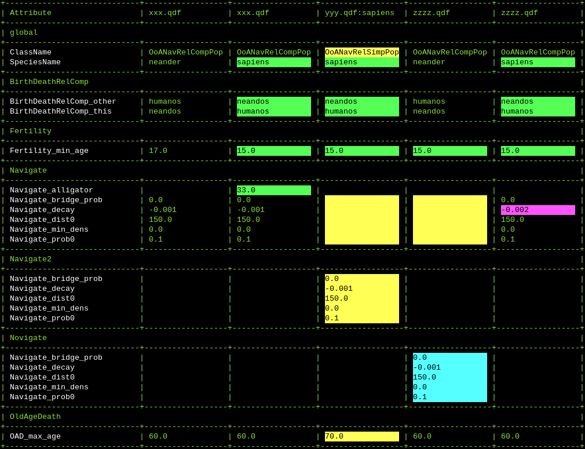

compare_attrs.py¶
With this script you can list and compare the attributes of one or more populations. There are various ways to highlight the differences between the populations.
This tool requires the python modules h5py and numpy to be installed.
Code: compare_attrs.py
Usage¶
${QHG4_DIR}/tools_qdf/compare_attrs.py [-d <prop>[,<prop>]] (<qdf_file>[:<pop>])*
${QHG4_DIR}/tools_qdf/compare_attrs.py [-d <propshorts>] (<qdf_file>[:<pop>])*
where
qdf_fileName of a QDF file.
popName of species to show attributes of (if omitted, the attributes of all populations in this file are shown).
propDisplay properties settings, with the following format.
prop ::= "global:"<state> | "action:"<state> | "hilite:"<hilite_state> | "diffonly:"<state> | "variants:"<state> | "numagents:"<state> | "shortnames:"<short_state> | "equalsize:"<state> state ::= "on" | "off"
propshortsA string consisting of display control characters (see the list below).
Display Properties
global: [on] show "global" attributes not belonging to an action action: [on] show "action" atributes diffonly: [off] only show rows with different values numagents: [on] show number of agents in header line short_names: [none] shorten names: 'none' use names as given 'path' remove path 'alias' use short alias names: qdf_* equalsize: [off] same width for all columns hilite_state: [file_group] use colors to hilite differences 'none' no hilighting 'simple' hilight entire line if it contains differences 'file_diff' hilight entries differing from the first one with the same color within a file 'group_diff' hilight groups of equal entries with the same color
Display Control characters
The display properties can be passed as a string composed of the following characters
'G' or 'g' - turn on or off property 'global'
'A' or 'a' - turn on or off property 'action'
'D' or 'd' - turn on or off property 'diffonly'
'N' or 'n' - turn on or off property 'numagents'
'E' or 'e' - turn on or off property 'equalsize'
'S' or 's' - turn on or off property 'shortnames'
'S' must be folllowed by one of these characters:
'n' - none
'p' - path
'a' - alias
'H' or 'h' - turn on or off property 'hilite'
'H' must be followed by on of these characters:
'n' - none
's' - simple
'd' - diff grouping
'f' - file grouping
The following two parameters are equivalent
-d hilite_state:file_diff,short_names:alias,diffonly:on,equalsize:on,global:off
-d HfSaDeg
Example
${QHG4_DIR}/tools_qdf/compare_attrs.py -d HdSaADeGn xxx.qdf yyy.qdf zzzz.qdf
gives an output like this:
